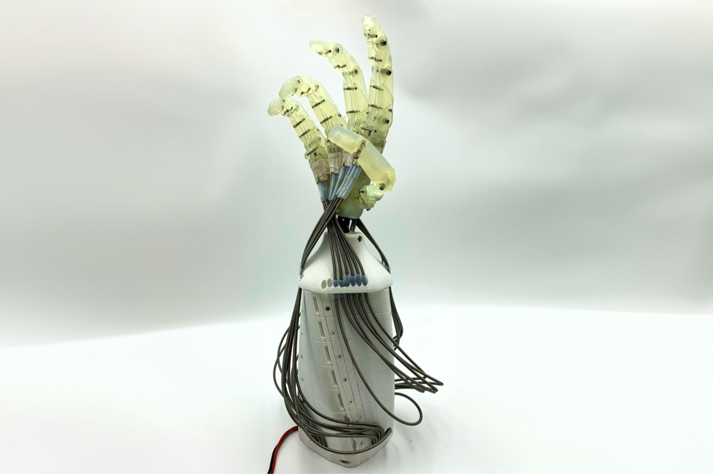

SIRo Soft Hand
How much of the control can the hardware itself take over?
Compliant mechanics for manipulation
We develop soft robotic hands whose mechanics contribute to grasping and manipulation. Compliant fingers deform on contact and adapt to an object’s shape, reducing the need to specify every contact through sensing and control. Our research examines how this passive response can be designed for a task, and where additional control is needed.
Compliance alone does not determine whether a grasp succeeds. A finger may conform to an object or bend away from it. We investigate programmable fingertip compliance: local changes in the thickness of a soft lattice structure shape how a fingertip deforms under load. This makes the distribution of compliance a design parameter for grasping and manipulation.

Variable-stiffness actuation
Our Variable Stiffness based on Bowden Cables (VSB) mechanism uses two opposing tendon drives. Bowden cables transmit tendon tension to elastic elements while allowing the motors to be placed separately. Increasing tension in both tendons changes joint stiffness; moving them in opposite directions changes the joint position.
The evaluated mechanism uses readily available compression springs to provide a set of adjustable stiffness levels. We have characterised its passive deflection and contact torques, and compared analytical and data-driven models. The SIRo Soft Hand provides the platform for investigating how these mechanisms affect contact-rich manipulation.
Research outputs and development
Our ICRA 2025 paper documents the VSB mechanism, including its geometry, components, analytical model and experimental evaluation. It provides the technical basis for reproducing the mechanism and adapting it to other designs.
The hand remains under active development. SIRo-AEMP investigates its application to surgical instrument handling and contributes to a possible spin-off from BHT.
Related Publications
- S. Puhlmann, A. Albu-Schäffer, H. Höppner, “VSB: Variable Stiffness Based on Bowden Cables: A Simple Mechanism for Soft Robotic Hands,” IEEE ICRA, pp. 5556–5562, 2025.
- S. Puhlmann, L.-C. Weber, H. Höppner, “Programming Passive Fingertip Deformation for Improved Grasping and Manipulation,” IEEE/RSJ IROS, pp. 9175–9181, Abu Dhabi, 2024.
- S. Puhlmann, H. Höppner, “Passiv deformierbare Materialkomponente zur Positionierung an einem Endeffektor,” published patent application DE102024129066A1, applicant Berliner Hochschule für Technik, 2026.
Collaborators
Development combines mechanism design, fabrication and application testing.
Designed and built the hand and leads its further development, including Bowden-cable variable-stiffness actuation and programmable fingertips.
Investigates grasping and handling surgical instruments in SIRo-AEMP.
Supports the manufacturing and assembly of the hands.
Principal investigator.
Research information reviewed in September 2026.